Note正在进行中 🚧
您正在阅读 Causal Inference in R 中文版的第一版草稿。本章节大部分已经完成，但我们可能会进行一些小的调整或文字编辑。
您正在阅读 Causal Inference in R 中文版的第一版草稿。本章节大部分已经完成，但我们可能会进行一些小的调整或文字编辑。
现在我们已经具备了相应工具，可以考察本书迄今一直暗示的一件事：因果推断不（只是）一个统计问题。 当然，我们使用统计学回答因果问题。 回答大多数问题都离不开统计学，即使所用统计方法很基础（随机化设计中往往如此）。 然而，仅凭统计学无法处理因果推断的所有假设。
1973 年，Francis Anscombe提出了一组由四个数据集构成的数据，称为安斯库姆四重奏。 这些数据揭示了一个重要教训：仅靠汇总统计量无法理解数据，还必须将数据可视化。 在 Figure 5.1 的图中，每个数据集都有极其相似的汇总统计量，包括几乎完全相同的均值和相关系数。
library(quartets)
anscombe_quartet |>
ggplot(aes(x, y)) +
geom_point() +
geom_smooth(method = "lm", se = FALSE) +
facet_wrap(~dataset)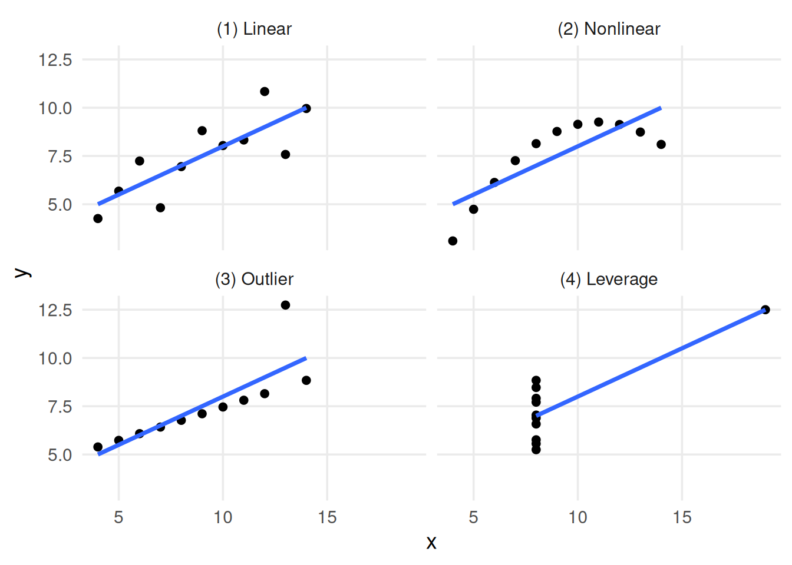
数据龙十二组是安斯库姆四重奏的现代版本。 各数据集的均值、标准差和相关系数几乎完全相同，但可视化结果大相径庭。
library(datasauRus)
# roughly the same correlation in each dataset
datasaurus_dozen |>
group_by(dataset) |>
summarize(cor = round(cor(x, y), 2))# A tibble: 13 × 2
dataset cor
<chr> <dbl>
1 away -0.06
2 bullseye -0.07
3 circle -0.07
4 dino -0.06
5 dots -0.06
6 h_lines -0.06
7 high_lines -0.07
8 slant_down -0.07
9 slant_up -0.07
10 star -0.06
11 v_lines -0.07
12 wide_lines -0.07
13 x_shape -0.07datasaurus_dozen |>
ggplot(aes(x, y)) +
geom_point() +
facet_wrap(~dataset)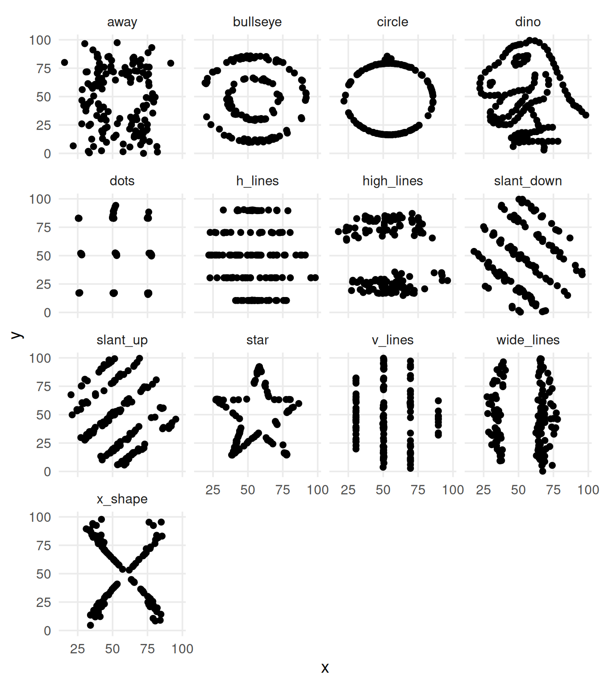
然而，在因果推断中，即使可视化也不足以厘清因果效应。 正如 Chapter 3 和 Chapter 4 所示，要从相关性推断因果关系，需要依赖基于背景知识且无法验证的假设 (Robins and Wasserman 1999)。
受安斯库姆四重奏启发，因果四重奏具有安斯库姆四重奏和数据龙十二组的许多相同性质：各数据集中变量的数值摘要相同 (D’Agostino McGowan et al. 2023)。 不同的是，因果四重奏在视觉上也彼此相同。 差异在于生成各数据集的因果结构。 Figure 5.3 展示了四个数据集，其中 exposure 与 outcome 的观察关系几乎完全相同。
causal_quartet |>
# hide the dataset names
mutate(dataset = as.integer(factor(dataset))) |>
group_by(dataset) |>
mutate(exposure = scale(exposure), outcome = scale(outcome)) |>
ungroup() |>
ggplot(aes(exposure, outcome)) +
geom_point() +
geom_smooth(method = "lm", se = FALSE) +
facet_wrap(~dataset)对于每个数据集，问题都是是否应调整第三个变量 covariate。 covariate 是混杂因素吗？ 是中介变量？ 还是碰撞点？ 我们无法利用数据本身解决这个问题。 在 Table 5.1 中，无法判断哪个效应才是正确的。 同样，exposure 与 covariate 之间的相关性也无济于事：它们全都相同！
library(gt)
effects <- causal_quartet |>
nest_by(dataset = as.integer(factor(dataset))) |>
mutate(
ate_x = coef(lm(outcome ~ exposure, data = data))[2],
ate_xz = coef(lm(outcome ~ exposure + covariate, data = data))[2],
cor = cor(data$exposure, data$covariate)
) |>
select(-data, dataset) |>
ungroup()
gt(effects) |>
fmt_number(columns = -dataset) |>
cols_label(
dataset = "Dataset",
ate_x = md("Not adjusting for `covariate`"),
ate_xz = md("Adjusting for `covariate`"),
cor = md("Correlation of `exposure` and `covariate`")
)| Dataset | Not adjusting for covariate |
Adjusting for covariate |
Correlation of exposure and covariate |
|---|---|---|---|
| 1 | 1.00 | 0.55 | 0.70 |
| 2 | 1.00 | 0.50 | 0.70 |
| 3 | 1.00 | 0.00 | 0.70 |
| 4 | 1.00 | 0.88 | 0.70 |
covariate 时 exposure 对 outcome 的估计效应。四个数据集的未调整估计完全相同，exposure 与 covariate 的相关系数也相同，但调整后估计各不相同。缺乏背景知识时，无法判断哪个正确。
百分之十规则是流行病学及其他领域判断变量是否为混杂因素的一种常用方法。 该规则认为，如果纳入某变量会使效应估计改变超过 10%，就应将其纳入模型。 问题在于，这种方法并不奏效。 因果四重奏中的每个示例都会造成超过 10% 的变化。 正如我们所知，这会在某些数据集中导致错误答案。 即使采用相反方法，即变化小于 10% 时排除变量，也可能产生问题，因为许多轻微混杂效应累积起来可能造成更大的偏倚。
effects |>
mutate(percent_change = scales::percent((ate_x - ate_xz) / ate_x)) |>
select(dataset, percent_change) |>
gt() |>
cols_label(
dataset = "Dataset",
percent_change = "Percent change"
)| Dataset | Percent change |
|---|---|
| 1 | 44.6% |
| 2 | 49.7% |
| 3 | 99.8% |
| 4 | 12.5% |
covariate 后，exposure 系数的百分比变化。
尽管 covariate 与 exposure 的视觉关系在各数据集间并不相同，但它们的相关系数均相同。 在 Figure 5.4 中，二者的标准化关系完全相同。
causal_quartet |>
# hide the dataset names
mutate(dataset = as.integer(factor(dataset))) |>
group_by(dataset) |>
summarize(cor = round(cor(covariate, exposure), 2))# A tibble: 4 × 2
dataset cor
<int> <dbl>
1 1 0.7
2 2 0.7
3 3 0.7
4 4 0.7causal_quartet |>
# hide the dataset names
mutate(dataset = as.integer(factor(dataset))) |>
group_by(dataset) |>
mutate(covariate = scale(covariate), exposure = scale(exposure)) |>
ungroup() |>
ggplot(aes(covariate, exposure)) +
geom_point() +
geom_smooth(method = "lm", se = FALSE) +
facet_wrap(~dataset)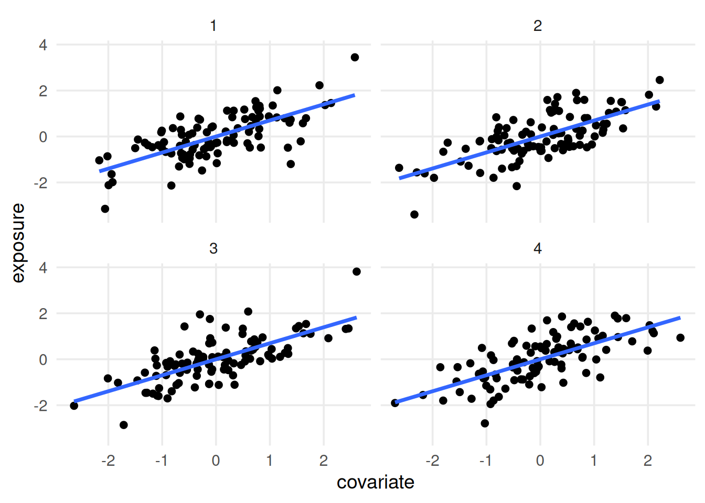
exposure 与 covariate 的标准化关系。我们仍然没有足够信息判断 covariate 是混杂因素、中介变量还是碰撞点。
像 scale() 所做的那样，将数值变量标准化为均值 0、标准差 1，是统计学中的常用技术。 标准化有多种用途；这里选择缩放变量，是为了突出每个数据集中 covariate 与 exposure 的相关系数完全相同。 如果不缩放变量，相关系数仍相同，但由于标准差不同，图形看起来会有所差异。 普通最小二乘（OLS）模型中的 beta 系数利用协方差和变量标准差计算，因此缩放后，该系数会与 Pearson 相关系数相同。
Figure 5.5 展示了 covariate 与 exposure 未经缩放的关系。 现在可以看到一些差异：数据集 4 中 covariate 的方差似乎更大，但这并不是可据以采取行动的信息。 事实上，它只是数据生成过程产生的数学伪象。
causal_quartet |>
# hide the dataset names
mutate(dataset = as.integer(factor(dataset))) |>
ggplot(aes(covariate, exposure)) +
geom_point() +
geom_smooth(method = "lm", se = FALSE) +
facet_wrap(~dataset)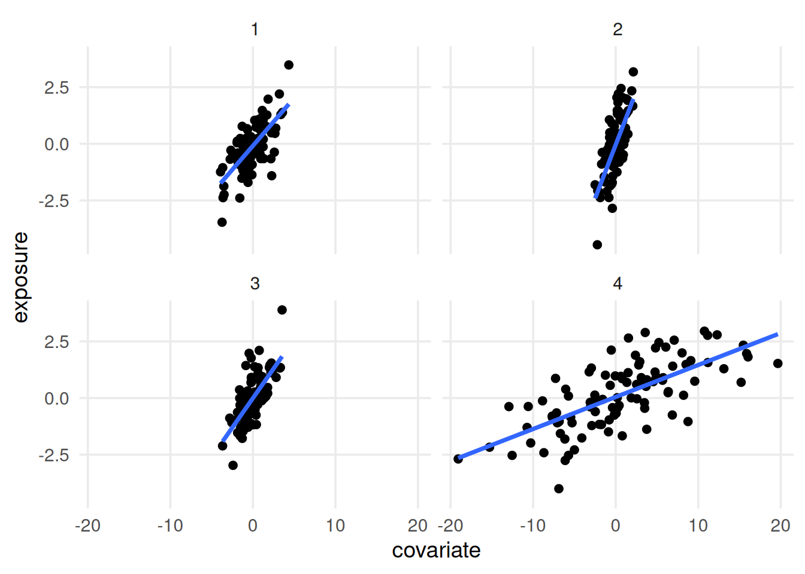
让我们揭示代表各数据集因果结构的标签。 在 Figure 5.6 中，covariate 在每个数据集中扮演不同角色。 在数据集 1 和 4 中，它是碰撞点（我们不应调整它）。 在数据集 2 中，它是混杂因素（我们应当调整它）。 在数据集 3 中，它是中介变量（是否调整取决于研究问题）。
causal_quartet |>
ggplot(aes(exposure, outcome)) +
geom_point() +
geom_smooth(method = "lm", se = FALSE) +
facet_wrap(~dataset)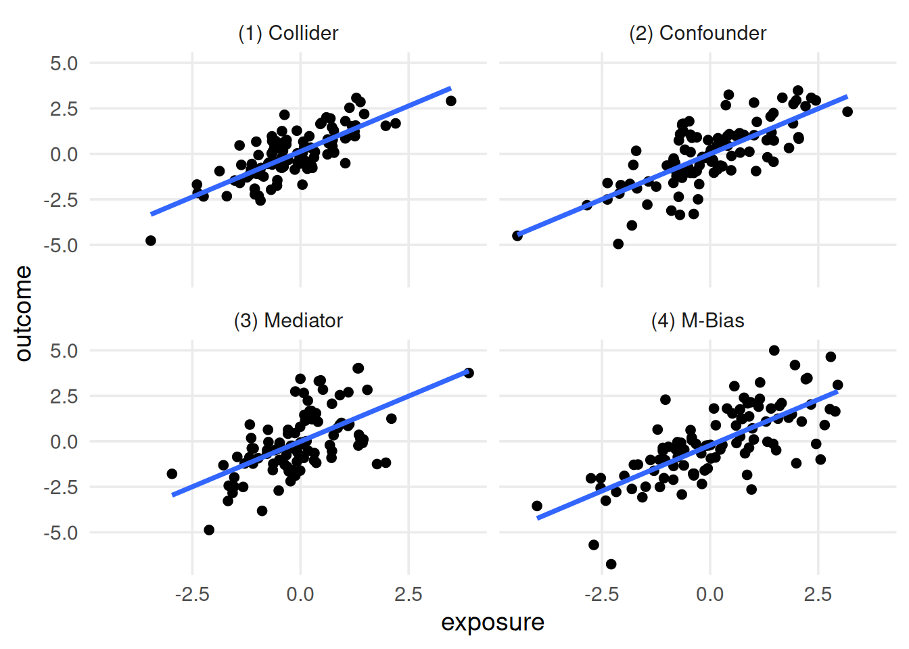
covariate。第二个数据集中，covariate 是混杂因素，应当控制它。第三个数据集中，covariate 是中介变量；若关注直接效应则应控制它，若关注总效应则不应控制。
如果数据无法区分这些因果结构，该怎么办？ 最佳答案是充分了解数据生成机制。 Figure 5.7 展示了每个数据集的 DAG。 一旦为每个数据集构建 DAG，在假设 DAG 正确的前提下，只需查询 DAG 得到正确调整集。
library(ggdag)
d_coll <- quartet_collider(x = "e", y = "o", z = "c")
d_conf <- quartet_confounder(x = "e", y = "o", z = "c")
d_med <- quartet_mediator(x = "e", y = "o", z = "c")
d_mbias <- quartet_m_bias(x = "e", y = "o", z = "c", u1 = "u1", u2 = "u2")
p_coll <- d_coll |>
tidy_dagitty() |>
mutate(covariate = if_else(label == "c", "covariate", NA_character_)) |>
ggplot(
aes(x = x, y = y, xend = xend, yend = yend)
) +
geom_dag_point(aes(color = covariate)) +
geom_dag_edges(edge_color = "grey70") +
geom_dag_text(aes(label = label)) +
theme_dag() +
coord_cartesian(clip = "off") +
theme(legend.position = "bottom") +
ggtitle("(1) Collider") +
guides(
color = guide_legend(
title = NULL,
keywidth = unit(1.4, "mm"),
override.aes = list(size = 3.4, shape = 15)
)
) +
scale_color_discrete(breaks = "covariate", na.value = "grey70")
p_conf <- d_conf |>
tidy_dagitty() |>
mutate(covariate = if_else(label == "c", "covariate", NA_character_)) |>
ggplot(
aes(x = x, y = y, xend = xend, yend = yend)
) +
geom_dag_point(aes(color = covariate)) +
geom_dag_edges(edge_color = "grey70") +
geom_dag_text(aes(label = label)) +
theme_dag() +
coord_cartesian(clip = "off") +
theme(legend.position = "bottom") +
ggtitle("(2) Confounder") +
guides(
color = guide_legend(
title = NULL,
keywidth = unit(1.4, "mm"),
override.aes = list(size = 3.4, shape = 15)
)
) +
scale_color_discrete(breaks = "covariate", na.value = "grey70")
p_med <- d_med |>
tidy_dagitty() |>
mutate(covariate = if_else(label == "c", "covariate", NA_character_)) |>
ggplot(
aes(x = x, y = y, xend = xend, yend = yend)
) +
geom_dag_point(aes(color = covariate)) +
geom_dag_edges(edge_color = "grey70") +
geom_dag_text(aes(label = label)) +
theme_dag() +
coord_cartesian(clip = "off") +
theme(legend.position = "bottom") +
ggtitle("(3) Mediator") +
guides(
color = guide_legend(
title = NULL,
keywidth = unit(1.4, "mm"),
override.aes = list(size = 3.4, shape = 15)
)
) +
scale_color_discrete(breaks = "covariate", na.value = "grey70")
p_m_bias <- d_mbias |>
tidy_dagitty() |>
mutate(covariate = if_else(label == "c", "covariate", NA_character_)) |>
ggplot(
aes(x = x, y = y, xend = xend, yend = yend)
) +
geom_dag_point(aes(color = covariate)) +
geom_dag_edges(edge_color = "grey70") +
geom_dag_text(aes(label = label)) +
theme_dag() +
coord_cartesian(clip = "off") +
ggtitle("(4) M-bias") +
theme(legend.position = "bottom") +
guides(
color = guide_legend(
title = NULL,
keywidth = unit(1.4, "mm"),
override.aes = list(size = 3.4, shape = 15)
)
) +
scale_color_discrete(breaks = "covariate", na.value = "grey70")
p_coll
p_conf
p_med
p_m_bias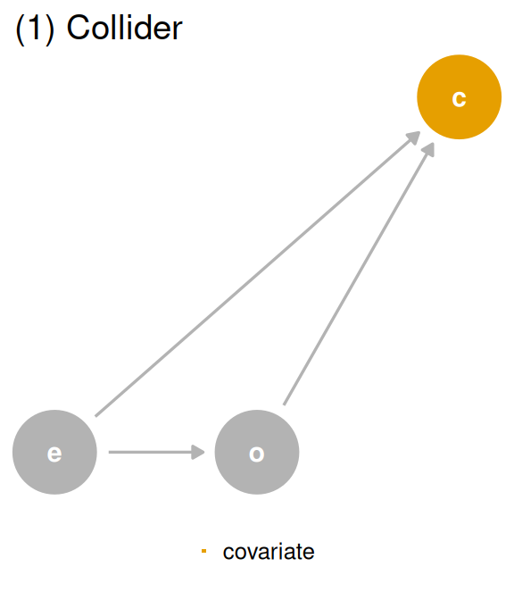
covariate（c）是碰撞点。covariate 是 exposure（e）和 outcome（o）的后代，因此不应调整它。
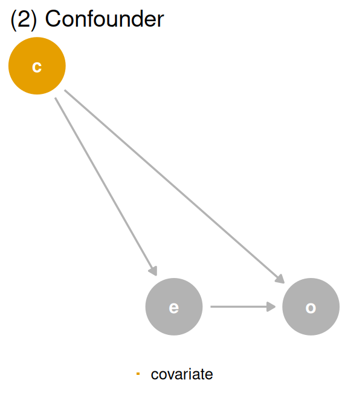
covariate（c）是混杂因素。covariate 是 exposure（e）和 outcome（o）的共同原因，构成一条后门路径，因此必须调整它才能得到正确答案。
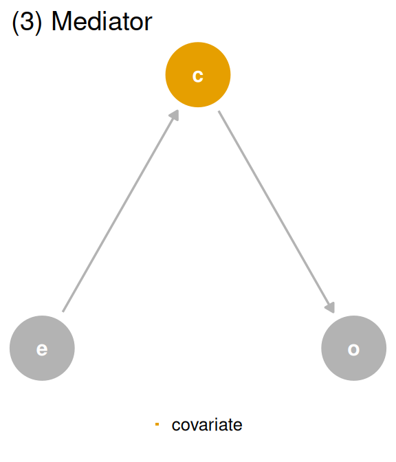
covariate（c）是中介变量。covariate 是 exposure（e）的后代，也是 outcome（o）的原因。经过 covariate 的路径是间接路径，经过 exposure 的路径是直接路径。若关注直接效应则应调整 covariate，若关注总效应则不应调整。
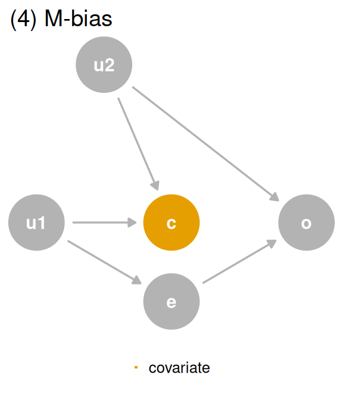
covariate（c）通过 M 偏倚成为碰撞点。尽管 covariate 先于 outcome（o）和 exposure（e）发生，它仍是碰撞点。不应调整 covariate，尤其因为 u1 和 u2 未被测量，无法控制经二者产生的偏倚。
DAG 中的数据生成机制1与生成这些数据集的机制相符，因此可以使用 DAG 确定正确效应：数据集 1 和 4 使用未调整效应，数据集 2 使用调整后效应。 对于数据集 3，则取决于所关注的中介效应：直接效应需要调整，总效应不需要调整。
| Data generating mechanism | Correct causal model | Correct causal effect |
|---|---|---|
| (1) Collider | outcome ~ exposure | 1 |
| (2) Confounder | outcome ~ exposure; covariate | 0.5 |
| (3) Mediator | Direct effect: outcome ~ exposure; covariate, Total Effect: outcome ~ exposure | Direct effect: 0, Total effect: 1 |
| (4) M-Bias | outcome ~ exposure | 1 |
希望我们已经让你相信 DAG 的用处。 不过，构建正确的 DAG 是一项具有挑战性的工作。 在因果四重奏中，由于数据由我们生成，因此知道相应的 DAG。 现实中，我们需要背景知识来构建候选因果结构。 对于某些问题，这类背景知识并不存在。 对于另一些问题，我们可能担心因果结构的复杂性，尤其是变量像 Figure 4.28 那样彼此共同演化时。
当 DAG 不完整或存在不确定性时，有一种启发式依据特别有用：时间。 由于因果关系具有时间性，原因必须先于结果发生。 只需按时间顺序排列变量，就能解决许多（但并非全部）有关是否应调整混杂因素的问题。 时间顺序也是 DAG 能够可视化的最关键假设之一，因此无论 DAG 是否完整，它都是极好的起点。
考虑 Figure 5.8 (a)，这是碰撞点 DAG 的时间排序版本，其中协变量在基线和随访时均被测量。 原始 DAG 实际表示第二次测量，此时协变量是结局和暴露的共同后代。 然而，如果控制研究开始时测量的同一协变量（Figure 5.8 (b)），它就不可能是随访结局的后代，因为随访结局尚未发生。 因此，当缺乏有关协变量因果结构的背景知识时，可以把时间排序作为避免偏倚的防御性措施。 只控制先于结局发生的变量。
d_coll <- quartet_time_collider(
x0 = "e0",
x1 = "e1",
x2 = "e2",
x3 = "e3",
y1 = "o1",
y2 = "o2",
y3 = "o3",
z1 = "c1",
z2 = "c2",
z3 = "c3"
)
d_coll |>
tidy_dagitty() |>
mutate(
covariate = if_else(label == "c3", "covariate\n(follow-up)", NA_character_)
) |>
ggplot(
aes(x = x, y = y, xend = xend, yend = yend)
) +
geom_dag_point(aes(color = covariate)) +
geom_dag_edges(edge_color = "grey70") +
geom_dag_text(aes(label = label)) +
theme_dag() +
coord_cartesian(clip = "off") +
theme(legend.position = "bottom") +
geom_vline(xintercept = c(2.6, 3.25, 3.6, 4.25), lty = 2, color = "grey60") +
annotate("label", x = 2.925, y = 0.97, label = "baseline", color = "grey50") +
annotate(
"label",
x = 3.925,
y = 0.97,
label = "follow-up",
color = "grey50"
) +
guides(
color = guide_legend(
title = NULL,
keywidth = unit(1.4, "mm"),
override.aes = list(size = 3.4, shape = 15)
)
) +
scale_color_discrete(breaks = "covariate\n(follow-up)", na.value = "grey70")
d_coll |>
tidy_dagitty() |>
mutate(
covariate = if_else(label == "c2", "covariate\n(baseline)", NA_character_)
) |>
ggplot(
aes(x = x, y = y, xend = xend, yend = yend)
) +
geom_dag_point(aes(color = covariate)) +
geom_dag_edges(edge_color = "grey70") +
geom_dag_text(aes(label = label)) +
theme_dag() +
coord_cartesian(clip = "off") +
theme(legend.position = "bottom") +
geom_vline(xintercept = c(2.6, 3.25, 3.6, 4.25), lty = 2, color = "grey60") +
annotate("label", x = 2.925, y = 0.97, label = "baseline", color = "grey50") +
annotate(
"label",
x = 3.925,
y = 0.97,
label = "follow-up",
color = "grey50"
) +
guides(
color = guide_legend(
title = NULL,
keywidth = unit(1.4, "mm"),
override.aes = list(size = 3.4, shape = 15)
)
) +
scale_color_discrete(breaks = "covariate\n(baseline)", na.value = "grey70")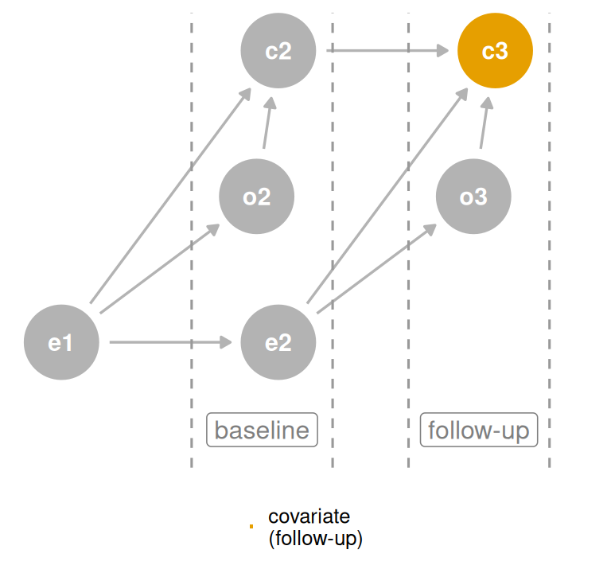
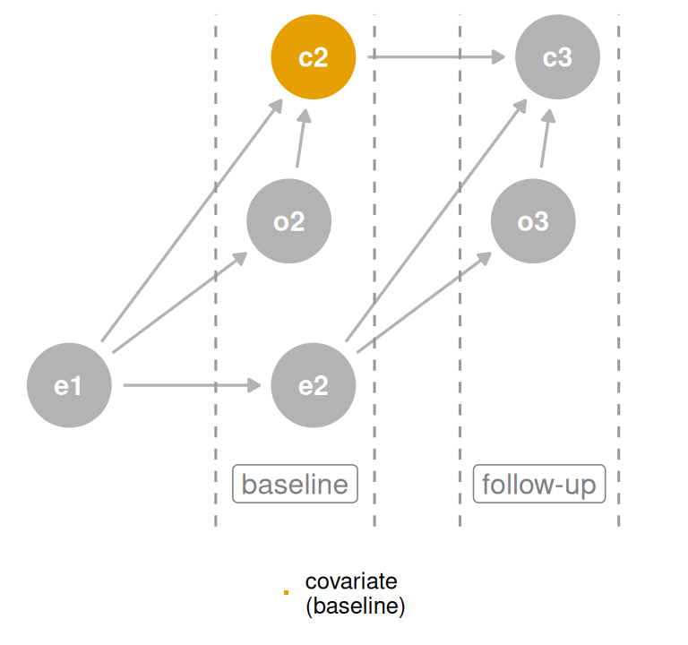
covariate 相当于控制碰撞点，但控制基线时的 covariate 则不是。
时间排序启发法依赖一条简单规则：不要调整未来变量。
quartet 包中的 causal_quartet_time 包含四个数据集中各变量按时间排序的测量值。 每个变量都有 *_baseline 和 *_follow-up 测量。
causal_quartet_time# A tibble: 400 × 12
covariate_baseline exposure_baseline
<dbl> <dbl>
1 -0.0963 -1.43
2 -1.11 0.0593
3 0.647 0.370
4 0.755 0.00471
5 1.19 0.340
6 -0.588 -3.61
7 -1.13 1.44
8 0.689 1.02
9 -1.49 -2.43
10 -2.78 -1.26
# ℹ 390 more rows
# ℹ 10 more variables: outcome_baseline <dbl>,
# covariate_followup <dbl>, exposure_followup <dbl>,
# outcome_followup <dbl>, exposure_mid <dbl>,
# covariate_mid <dbl>, outcome_mid <dbl>, u1 <dbl>,
# u2 <dbl>, dataset <chr>公式 outcome_followup ~ exposure_baseline + covariate_baseline 对四个数据集中的三个有效。 尽管 covariate_baseline 只在第二个数据集的调整集中，但在另外两个数据集中它并非碰撞点，因此不会造成问题。
causal_quartet_time |>
nest_by(dataset) |>
mutate(
adjusted_effect = coef(
lm(
outcome_followup ~ exposure_baseline + covariate_baseline,
data = data
)
)[2]
) |>
bind_cols(tibble(truth = c(1, 0.5, 1, 1))) |>
select(-data, dataset) |>
ungroup() |>
set_names(c("Dataset", "Adjusted effect", "Truth")) |>
gt() |>
fmt_number(columns = -Dataset)| Dataset | Adjusted effect | Truth |
|---|---|---|
| (1) Collider | 1.00 | 1.00 |
| (2) Confounder | 0.50 | 0.50 |
| (3) Mediator | 1.00 | 1.00 |
| (4) M-Bias | 0.88 | 1.00 |
exposure_baseline 对 outcome_followup 的调整后效应。对 covariate_baseline 调整所得效应，在四个数据集中的三个是正确的。
该公式在数据集 4，即 M 偏倚示例中失效。 在这种情况下，covariate_baseline 仍是碰撞点，因为碰撞发生在暴露和结局之前。 不过，正如 Section 4.3.2.1 所讨论的，如果不确定某种结构是否真正属于 M 偏倚，调整它通常比不调整更好。 混杂偏倚往往更严重，而具有实际意义的 M 偏倚在现实中可能很少见。 随着实际因果结构偏离完美的 M 偏倚，偏倚的严重程度往往会降低。 因此，如果明确属于 M 偏倚，就不要调整该变量。 如果不明确，则应调整。
还要记住，在某些情况下可以阻断调整碰撞点所诱发的偏倚，因为碰撞偏倚只是另一条开放路径。 如果拥有 u1 和 u2，就可以在控制 covariate 的同时阻断潜在碰撞偏倚。 换言之，有时打开一条路径后，还可以再次将其闭合。
预测度量同样无法区分这四个数据集。 Table 5.5 展示了模型加入 covariate 后，几个标准预测指标的变化。 在每个数据集中，covariate 都为模型增加了信息，因为它包含有关结局的关联信息 2。 RMSE 降低，表明拟合改善；R2 升高，表明解释了更多方差。 covariate 的系数代表其包含的有关 outcome 的信息，却无法说明该信息来自因果结构中的何处。 相关不等于因果，预测也不等于因果。 对于碰撞点数据集，它甚至不是有用的预测工具，因为 covariate 发生在暴露和结局之后，进行预测时尚无法获得该变量。
get_rmse <- function(data, model) {
sqrt(mean((data$outcome - predict(model, data))^2))
}
get_r_squared <- function(model) {
summary(model)$r.squared
}
causal_quartet |>
nest_by(dataset) |>
mutate(
rmse1 = get_rmse(
data,
lm(outcome ~ exposure, data = data)
),
rmse2 = get_rmse(
data,
lm(outcome ~ exposure + covariate, data = data)
),
rmse_diff = rmse2 - rmse1,
r_squared1 = get_r_squared(lm(outcome ~ exposure, data = data)),
r_squared2 = get_r_squared(lm(outcome ~ exposure + covariate, data = data)),
r_squared_diff = r_squared2 - r_squared1
) |>
select(dataset, rmse = rmse_diff, r_squared = r_squared_diff) |>
ungroup() |>
gt() |>
fmt_number() |>
cols_label(
dataset = "Dataset",
rmse = "RMSE",
r_squared = md("R^2^")
)| Dataset | RMSE | R2 |
|---|---|---|
| (1) Collider | −0.14 | 0.12 |
| (2) Confounder | −0.20 | 0.14 |
| (3) Mediator | −0.48 | 0.37 |
| (4) M-Bias | −0.01 | 0.01 |
covariate 时，outcome 预测指标的差异。每个数据集中，covariate 都为模型增加了信息，但这对选择适当的因果模型几乎没有指导意义。
与此相关，除所关注原因以外的其他变量，其模型系数可能难以解释。 在模型 outcome ~ exposure + covariate 中，人们很容易想要同时报告 covariate 和 exposure 的系数。 但正如 Section 1.2.5 所讨论的，covariate 对 outcome 效应的因果结构，可能不同于 exposure 对 outcome 效应的因果结构。 让我们考虑加入其他变量后的四重奏 DAG 变体。
首先从混杂因素 DAG 开始。 在 Figure 5.9 中，covariate 是混杂因素。 如果该 DAG 代表 outcome 的完整因果结构，并且满足建模过程的其他假设，那么模型 outcome ~ exposure + covariate 将给出 exposure 对 outcome 效应的无偏估计。 covariate 对 outcome 效应的调整集为空，而且 exposure 不是碰撞点，因此控制它不会诱发偏倚4。 但请再看一遍。 对于 covariate 对 outcome 的效应，exposure 是中介变量；部分总效应通过 exposure 中介，同时 covariate 对 outcome 还存在直接效应。 两个估计都是无偏的，但属于不同类型的估计。 exposure 对 outcome 的效应是该关系的总效应，而 covariate 对 outcome 的效应是直接效应。
p_conf +
ggtitle(NULL)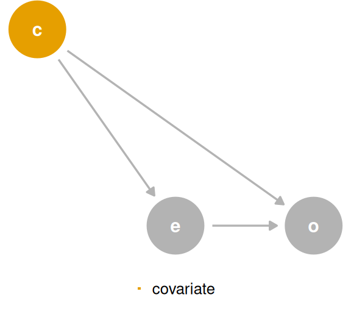
covariate 是混杂因素。仔细观察会发现，从 covariate 对 outcome 效应的角度看，exposure 是一个中介变量。
如果加入 covariate 和 outcome 的共同原因 q，会怎样？ 在 Figure 5.10 中，两个调整集仍然不同。 outcome ~ exposure 的调整集仍为 {covariate}。 outcome ~ covariate 的调整集则为 {q}。 换言之，对于 covariate 对 outcome 的效应，q 是混杂因素。 模型 outcome ~ exposure + covariate 会为 exposure 产生正确效应，却无法产生 covariate 的正确直接效应。 此时，covariate 不仅回答与 exposure 不同类型的问题，还因缺少 q 而存在偏倚。
coords <- list(
x = c(X = 1.75, Z = 1, Y = 3, Q = 0),
y = c(X = 1.1, Z = 1.5, Y = 1, Q = 1)
)
d_conf2 <- dagify(
X ~ Z,
Y ~ X + Z + Q,
Z ~ Q,
exposure = "X",
outcome = "Y",
labels = c(X = "e", Y = "o", Z = "c", Q = "q"),
coords = coords
)
p_conf2 <- d_conf2 |>
tidy_dagitty() |>
mutate(covariate = if_else(name == "Q", "covariate", NA_character_)) |>
ggplot(
aes(x = x, y = y, xend = xend, yend = yend)
) +
geom_dag_point(aes(color = covariate)) +
geom_dag_edges(edge_color = "grey70") +
geom_dag_text(aes(label = label)) +
theme_dag() +
coord_cartesian(clip = "off") +
theme(legend.position = "none") +
guides(
color = guide_legend(
title = NULL,
keywidth = unit(1.4, "mm"),
override.aes = list(size = 3.4, shape = 15)
)
) +
scale_color_discrete(breaks = "covariate", na.value = "grey70")
p_conf2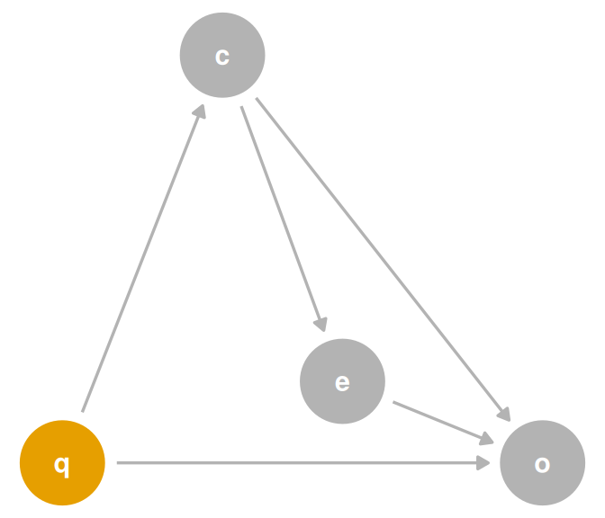
covariate 是混杂因素。现在，covariate 与 outcome 的关系受到 q 的混杂；但计算 exposure 对 outcome 的无偏效应并不需要 q。
设定单个因果模型本身就极具挑战。 让单个模型回答多个因果问题，其难度更会成倍增加。 如果尝试这样做，应以同样严格的标准审查两个5问题。 是否存在一个能够同时回答两个问题的调整集？ 如果不存在，就应设定两个模型，或放弃其中一个问题。 如果存在，也需要确保估计回答的是正确问题。 我们还将在 ?sec-interaction 中讨论联合因果效应。
遗憾的是，用于检测多个暴露和效应类型之调整集的算法尚不成熟，因此在确定调整集的交集时，可能需要依赖你对因果结构的了解。
对于 M 偏倚，在模型中纳入 covariate 的帮助程度，取决于它包含多少有关结局原因之一 u2 的信息。 本例的数据生成机制使 covariate 包含的 u1 信息多于 u2，因此增加的预测价值不那么大。 u2 未能解释的部分主要表现为随机噪声。↩︎
回顾一下，表二谬误得名于健康研究期刊的一种惯例：在论文第二张表中列出完整的一组模型系数。 有关表二谬误的详细讨论见 Westreich and Greenland (2013)。↩︎
此外，OLS 产生的是可折叠效应。 其他效应（如比值比和风险比）是不可折叠的，这意味着即使不存在混杂，条件比值比或风险比也可能不同于其边际版本。 我们将在 ?sec-non-collapse 中讨论不可折叠性。↩︎
从事”随意”推断（casual inference）的人会以这种方式从单个模型解释许多效应，但我们认为这是一种逞强之举。↩︎